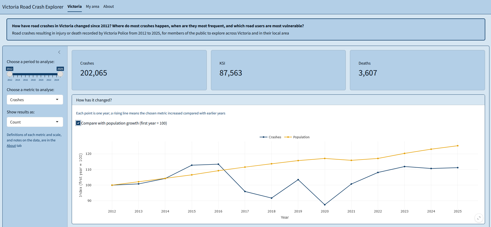
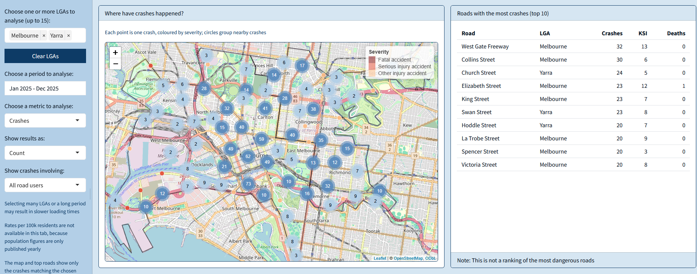

Who this package is for
roadcrashVIC is designed for members of the public who
want to understand road safety in Victoria, across the state or in their
local area. It helps answer one question: how have road crashes
in Victoria changed since 2012, where do most crashes happen, when are
they most frequent, and which road users are most
vulnerable?
The package contains cleaned crash, boundary and population data, four functions to filter and summarise the crashes, and a Shiny app to explore the question interactively.
Installation
The package requires R 4.1.0 or later and is installed from GitHub:
# install.packages("remotes")
remotes::install_github("ETC5523-2026/etc5523-assignment-4-eduvit")The data
vic_crashes has one row for each road crash in Victoria
in which at least one person was injured or killed, from 2012 to 2025,
as recorded by Victoria Police:
vic_crashes |>
dplyr::select(accident_date, lga_name, severity) |>
head(5)
#> # A tibble: 5 × 3
#> accident_date lga_name severity
#> <date> <chr> <fct>
#> 1 2014-11-27 WELLINGTON Other injury accident
#> 2 2019-12-27 BANYULE Other injury accident
#> 3 2019-10-02 BRIMBANK Other injury accident
#> 4 2025-11-07 KNOX Serious injury accident
#> 5 2021-01-30 CARDINIA Serious injury accidentTwo further datasets support rates and maps:
vic_population, the resident population of each local
government area (LGA) by year, and vic_lga, the LGA
boundaries. All three come from Victorian Government and Australian
Bureau of Statistics sources under the CC BY 4.0 licence. Their help
pages (?vic_crashes, ?vic_population,
?vic_lga) describe every column and the changes made to the
original files.
The functions
Filtering by date: filter_crashes()
filter_crashes() keeps the crashes between two dates,
both included:
crashes_2025 <- filter_crashes(vic_crashes, start_date = "2025-01-01", end_date = "2025-12-31")
range(crashes_2025$accident_date)
#> [1] "2025-01-01" "2025-12-31"
nrow(crashes_2025)
#> [1] 15468Summarising by any variable: summarise_crashes()
summarise_crashes() counts crashes and people killed and
injured in each group, and the same casualties per 1,000 crashes. KSI
stands for people killed or seriously injured.
summarise_crashes(crashes_2025, by = "day_of_week")
#> # A tibble: 7 × 10
#> day_of_week crashes fatalities serious_injuries other_injuries ksi
#> <fct> <int> <dbl> <dbl> <dbl> <dbl>
#> 1 Monday 2065 41 804 1735 845
#> 2 Tuesday 2307 31 852 1994 883
#> 3 Wednesday 2340 41 905 2007 946
#> 4 Thursday 2290 46 810 1949 856
#> 5 Friday 2386 45 921 2016 966
#> 6 Saturday 2158 32 960 1907 992
#> 7 Sunday 1922 53 857 1687 910
#> # ℹ 4 more variables: fatalities_per_1000_crashes <dbl>,
#> # serious_injuries_per_1000_crashes <dbl>,
#> # other_injuries_per_1000_crashes <dbl>, ksi_per_1000_crashes <dbl>The group can be any column of vic_crashes, or several
columns together, for example
by = c("day_of_week", "hour").
Rates per resident: crash_rates()
Areas with more residents usually have more crashes.
crash_rates() adds the population and the yearly rates per
100,000 residents, which make years or LGAs of different sizes
comparable:
crash_rates(vic_crashes, vic_population, by = "year") |>
dplyr::select(year, crashes, population, crashes_per_100k)
#> # A tibble: 14 × 4
#> year crashes population crashes_per_100k
#> <int> <int> <dbl> <dbl>
#> 1 2012 13912 5651091 246.
#> 2 2013 14023 5772669 243.
#> 3 2014 14503 5894917 246.
#> 4 2015 15684 6022322 260.
#> 5 2016 15779 6173172 256.
#> 6 2017 13351 6302608 212.
#> 7 2018 12765 6423038 199.
#> 8 2019 14398 6537305 220.
#> 9 2020 12170 6615046 184.
#> 10 2021 14012 6547822 214.
#> 11 2022 15041 6615232 227.
#> 12 2023 15566 6797169 229.
#> 13 2024 15393 6950961 221.
#> 14 2025 15468 7073859 219.With by = "lga_name", the rate of each LGA is averaged
over the years of the data.
Vulnerable road users: summarise_vulnerable()
summarise_vulnerable() applies
summarise_crashes() to all crashes and to the crashes
involving a pedestrian, a cyclist or a motorcyclist:
summarise_vulnerable(vic_crashes) |>
dplyr::select(road_user, crashes, ksi_per_1000_crashes)
#> # A tibble: 4 × 3
#> road_user crashes ksi_per_1000_crashes
#> <chr> <int> <dbl>
#> 1 All crashes 202065 433.
#> 2 Pedestrian 17696 498.
#> 3 Cyclist 19593 337.
#> 4 Motorcyclist 28362 507.Note: a crash involving more than one of these road users appears in more than one row.
Launching the app
The app uses the same functions and data. It opens in the browser or in the RStudio/Positron viewer:
run_app()Using the app
Victoria
- Choose a period to analyse: the first and last year included.
- Choose a metric to analyse: crashes, people killed or seriously injured (KSI), or deaths.
- Show results as: a count, a yearly rate per 100k residents, or a rate per 1,000 crashes.
- Compare with population growth: an option of the trend chart, which sets the first year to 100 for both the metric and the population.
- When do crashes happen most?: a menu above the chart to show months, days of the week or hours of the day.

My area
- Choose one or more LGAs to analyse: up to 15 LGAs; Clear LGAs removes them all.
- Choose a period to analyse: a range of months; clicking the same month twice selects that month only.
- Choose a metric to analyse and Show results as: as in the Victoria tab, without rates per resident, as population figures are only published yearly.
- Show crashes involving: all crashes, or only those involving pedestrians, cyclists or motorcyclists.

Selections that are not allowed
Some combinations of inputs cannot give a meaningful result. The app shows a message in place of the affected outputs:
- Crashes per 1,000 crashes: always equal to 1,000; the app asks to choose KSI or deaths.
- No LGA selected in the My area tab: the app asks to choose at least one.
- A selection with no crashes, such as a small area over a short period: the outputs state that no crashes match the selection.
- A road user filter with the Who chart in the My area tab: the chart compares road users itself, and asks to select all road users.
Interpreting the outputs
- Value boxes: totals for the selected period, or average rates; the title of each box shows the scale.
- How has it changed?: each point is one year. With Compare with population growth, both lines start at 100: values above 100 are higher than in the first year, and comparing the two lines shows whether the metric changed faster or slower than the population.
- When do crashes happen most?: taller bars mark the times with higher values. With Per 1,000 crashes, the bars measure how severe crashes are instead of how frequent.
- Who is the most vulnerable road user?: the value for all crashes is shown above the chart; comparing each bar with it shows whether crashes involving that road user are above or below the average.
- Maps: on the Victoria map, darker areas have higher values; on the My area map, each point is one crash, coloured by severity. Hovering on a point shows a brief summary of the crash, while clicking shows its details.
- Roads with the most crashes: a list of the roads with the most crashes in the selected area; it is not a ranking of the most dangerous roads.
Limitations
- Rates per resident do not account for how much people drive or for traffic passing through an area; a lower rate does not necessarily mean safer roads.
- Traffic volumes are not included in the data, and roads cannot be compared fairly by their number of crashes.
- Small areas and short periods have few crashes, and their figures can vary considerably by chance.
- Crash numbers in 2020 and 2021 were affected by COVID-19 restrictions.
- Some crashes from late 2025 do not have a recorded location yet; they count only in state-wide totals.
The About tab of the app lists all definitions and data sources.